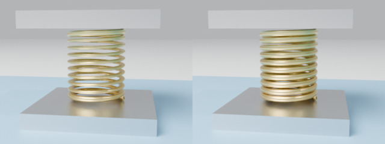

Soft and springy parts (study 0300)
1 · Clips: today (left) and the prototype (right)
An invented test model with four stations, made by tools/soft_proto/scene.py; each moved by a keyed part (the app's
joint stands in). Cycles on the processor, 400 × 300 each half, every 2nd frame at 12 frames/s. "Today" is how the app shows the same
motion now: the parts are rigid, so the moving part goes through them.

2 · What each kind needs
| Kind | How it moves | Read from the CAD | Prototype |
|---|---|---|---|
| Compression spring | shorter / longer between its seats; closed end turns keep their size, free turns share the travel; never shorter than solid (all turns touching) | axis, outer Ø, wire Ø, free length, turns, end turns, pitch, hand – from the mesh alone | ✔ clip 1 |
| Extension spring | longer only; the coils (closed at rest) open, hooks stay | as above; all coils closed = extension spring, the hooks are the ends | same deformer, not tried |
| Torsion spring | the legs turn; the coil winds up a little (each turn turns a share of the leg's angle) | axis, turns, the two legs and the parts they lie on | – (a twist deformer, task G) |
| Gas spring, damper, shock absorber | two rigid parts sliding in each other between two eyes | barrel, rod, the two pins | none needed: the app's cylinder in Follow mode does it today |
| Rubber buffer, bump stop, mount | squeezed when the other part touches it, the volume kept by a bulge (largest half-way, none at the faces held) | axis, height, which face stands | ✔ clip 2 |
| Bellows, folding boot | the folds close and open between two cuffs | axis, length, the cuffs (the plain ends) | ✔ clip 3 |
| Gaiter that bends, rubber bush that twists (silentbloc) | between two parts that turn against each other: each point follows the one part, the other or a share of both | the two parts, inner and outer sleeve | – (task G) |
| Tyre on the ground | flat where it meets the ground, walls bulge; turns with the wheel | axle, outer radius, width | ✔ clip 4 (flat ground; terrain with study 0306) |
| Seal, O-ring | squeezed already in the CAD; nothing moves | – | not needed |
3 · How in Blender, and what it costs (measured)
Blender 5.2.3 as a Python module on the web machine (4 cores, no graphics card), 100 copies of one part sharing one mesh (as
the app's copies of a part do), 48 frames stepped, the same scene without the deformers subtracted. Numbers: numbers.json;
script: tools/soft_proto/measure.py.
| Part | Triangles | ms per part per frame | 100 parts: ms per frame |
|---|---|---|---|
| Coil spring (Geometry Nodes, following the wire) | 15,392 | 0.26 | 26 |
| Bellows | 1,840 | 0.17 | 17 |
| Tyre | 5,952 | 0.15 | 16 |
| Rubber buffer, the import's mesh made finer in the nodes every frame (level 3) | 288 → 27,648 | 1.36 | 136 |
| Rubber buffer, made finer in the nodes (level 2) | 288 → 6,912 | 0.53 | 53 |
| Rubber buffer, meshed finer at import (12 rows up the side) | 1,344 | 0.06–0.08 | 6–8 |
| Rubber buffer, the import's mesh as it is | 288 | 0.06 | – its side is one strip: it cannot bulge (it turns into a cone) |
| Spring as a shape key + a driver (the other way) | 15,392 | 0.03 | 3 |
All four kinds at once, 50 of each (200 soft parts, the rubber refined in the nodes): 102 ms a frame instead of 0.3. A machine with 40 springs and 20 buffers meshed finer at import: about 12 ms a frame here (counted from the rows, not measured as one scene). On a 24-core PC the parts are worked out side by side; less is expected but not measured. In a render the deformers add next to nothing to the picture's seconds.
What was tried and why the Geometry Nodes way
- Geometry Nodes on the part itself (the prototype): the modifier reads the two parts with Object Info, so whatever moves them (a joint, a cylinder, a mechanism, vessel motion) moves the spring. The part keeps its material, selection, copies and decals' parent. Every point's new place is a straight-line function of the seats' places for springs and bellows: one glTF morph target is exact (0.000007 mm) – the web 3D model can carry it. Rubber needs 2–3 targets (one: 2.2 mm off on 25 mm, two: 0.6 mm).
- Shape key + driver: 8× cheaper, but a shape key lives on the mesh, and the app's copies of a part share one mesh: all four springs of a machine would squeeze together. It also needs a driver per spring that knows which joint moves the seat (a cylinder, a mechanism, vessel motion all differ). Not chosen.
- A plain stretch (scale along the axis, Blender's Simple Deform) flattens a spring's wire (picture above) and squashes the end turns. Right for bellows only.
- Blender's soft body or cloth: not tried – they need a bake after every change, take seconds a frame and wobble; a machine's spring does not need physics, it needs its two ends. (Expectation, not measured.)
Rubber: a mesh to bend
An import cuts a round part's side into strips from bottom to top: there is no point half-way up to bulge. Refining in the nodes every frame costs 0.5–1.4 ms per part. Cheaper: the importer meshes parts of the kinds Rubber parts and Bellows finer along their height (the facets are already chosen per part size since task 0074) – then 0.06–0.08 ms. The squeezed shape's light needs new normals (smooth by angle, 30°); the spring keeps the import's normals (its wire stays round).
What the rest of the app does with a soft part
| Function | Today with a deformer on (read from the code) | What a build task does |
|---|---|---|
| Clash check | reads the part's CAD mesh and rigid places: a compressed spring would "clash" with its own top plate | leaves soft parts out (as hoses are, clash.HOOKS), and adds its own row instead: "spring squeezed solid at 3.2 s (needs 44 mm, gets 41)" |
| Web 3D model | exports places of parts only (translation / rotation): the spring would stay at its CAD shape | one morph target per spring / bellows (exact), 2–3 per rubber part (task F) |
| Model update | the modifier stays on the object, the new mesh comes in; the numbers read (axis, turns …) are the old part's | read the spring again from the new mesh, keep the two parts by their IDs (as hoses do, flex.after_model_update) |
| Render queue, scripts off | works: real Blender 5.2.3, --disable-autoexec, frame 40: spring 50.0 mm, buffer 16.5 mm, bellows 80.0 mm (as in the app) | nothing |
| Copies of one part | each copy has its own modifier, the mesh stays shared | "also set up the other 3 copies" in Done |
| Decals on a spring | the decal does not bend with it | nothing (rare) |
4 · Reading a spring from its mesh (measured)
Four invented springs, each turned 40° and moved away from the origin (as an import places them); closed end turns, not ground.
tools/soft_proto/read.py: the axis is the line the points keep the steadiest distance from; the wire's outside edge is followed
round to count turns and find where the closed end turns stop.
| Made: outer Ø / wire / free / turns / end turns / pitch | Read | Time |
|---|---|---|
| 40 / 4 / 80 mm / 10 / 1 / 8.5 | 40.0 / 4.0 / 80.0 / 10.00 / 0.99 / 8.50 | 0.75 s |
| 30 / 3 / 60 mm / 7 / 0.75 / 9.55 | 30.0 / 3.0 / 60.0 / 6.99 / 0.71 / 9.53 | 0.88 s |
| 120 / 12 / 300 mm / 6.5 / 1 / 58.67 | 120.0 / 12.0 / 300.0 / 6.50 / 0.90 / 57.77 | 1.08 s |
| 20 / 1.5 / 50 mm / 12.25 / 1.5 / 4.76 | 20.0 / 1.5 / 50.0 / 12.25 / 1.52 / 4.76 | 0.69 s |
Solid length = (turns + 1) × wire: 44.0 mm for the first spring, read 44.0. Not tried yet: ground ends (a flat cut on the end turns), springs with a changing diameter (conical, barrel), die springs with a rectangular wire, a spring drawn already squeezed or overlapping its plates in the CAD (the reader must then be told the free length), springs from the owner's own models.
5 · Set-up in a few clicks (mock-up)
A new kind in the existing Set-up window (task 0062: one step at a time, Back / Next, a green tick on a step already done), "Spring or rubber part". Drawn here, not in the app. The app finds most of it by itself: the part by its kind (the importer already sorts Springs, Rubber parts, Gas springs & shock absorbers, Seals in English, Dutch and German), the two parts by touching it at its two ends, everything else from the mesh.
Even quicker: Find springs and rubber (one button in 4 Motion) lists every part of those kinds whose two ends touch two different parts, with ticks; Set up all ticked runs the four steps by itself and shows only the ones it could not finish. A right-click on a part (the menu of task 0253): Make it springy… opens the window at step 2.
6 · Build tasks – tick what to build
Work: S ≈ half a day of a worker chat, M ≈ a day, L ≈ two or more. All in the Motion lane (4 Motion) except E (Vehicles lane, with 0306) and F (Web 3D). Each adds its PC-check line, test-tour stop, guide section and function entry, as the rules say.
Springs and bellows that follow their two parts work M–L · Opus · High · first
The spring reader and the deformer of this study made real: compression and extension springs (the wire stays round, closed end turns keep their size, never shorter than solid), bellows and folding boots (cuffs found as the plain ends). Stored per part in the project with the two parts' IDs; a model update reads the spring again; copies set up together. The Set-up window kind of section 5, Find springs and rubber. The clash check leaves soft parts out and says when a spring goes solid or a bellows is pulled past its length.
Gain: every spring and bellows of a machine moves right with a few clicks; 0.17–0.26 ms per part a frame on the web machine.
Rubber that squeezes work M · Opus · Medium · after A (same window)
Buffers, bump stops, mounts, rubber feet: squeezed once the other part touches, the volume kept by a bulge. The importer meshes parts of the kinds Rubber parts and Bellows finer along their height (so no refining every frame). How much it bulges: one setting (Soft / Firm).
Gain: stops and buffers look like rubber instead of a part being cut through; 0.06–0.08 ms a part.
Gas springs and dampers in one click work S · Sonnet · Medium · with A's window
A part of the kind Gas springs & shock absorbers (or a barrel + rod pair found inside it) offers Make it a cylinder: the app's cylinder in Follow mode, both pins found from the eyes. A coil-over (spring round a damper) = C + A, the spring's seats on the barrel and the rod.
Gain: the most common "springy" part of a machine works today already – it only has to be found and set up for the user.
Right-click: Make it springy… work S · Sonnet · Medium · after A, context_menu.py
The 3D view's right-click menu (task 0253) offers "Make it springy…" on a part of a soft kind and on any part picked; the Set-up window opens at step 2 with that part.
Gain: one click less than the window; small.
Tyres on the ground work M · Opus · High · Vehicles lane, after 0306's picks
The tyre deformer of clip 4: a flat where it meets the ground, walls bulging by the load; on uneven terrain it looks down at the ground's mesh (study 0306 / 0311 make the terrain). Comes with the vehicle set-up rather than alone.
Gain: a vehicle that stands and drives with weight on its tyres; 0.15 ms a tyre.
Soft parts in the web 3D model work M · Opus · Medium · after A, web3d.py
Each spring and bellows becomes one glTF morph target whose weight follows the animation (exact); rubber gets 2–3. Without this task the web model shows them at their CAD shape while their parts move.
Gain: the web model and the video agree; needed once a machine with springs goes on the site.
Torsion springs, gaiters that bend, rubber bushes that twist work M–L · Opus · High · after A
A second deformer: every point follows one part, the other or a share of both (by its place along the part or between the sleeves) – torsion legs, a CV boot on a turning shaft, a silentbloc in an arm's eye. Not prototyped in this study.
Gain: the rest of the rubber in a vehicle or a hinge; less common in the owner's machines.
Springs that push back work L · Opus · High · after A, with the Motion lane
Today a joint moves and the spring follows. The other way round – a spring that holds a part up until something pushes it, a tensioner arm pressed by its spring, a part that bounces – needs a spring rate (N/mm, read from a catalogue name or typed) and a small solver at Build. Only if the owner's animations need it.
Gain: real behaviour (a tensioner that keeps a belt tight); a bigger step than the look.
Clips and pictures: this folder; numbers: numbers.json; scripts: tools/soft_proto/ (shapes.py the test model's shapes, read.py the spring reader, nodes.py the three deformers, scene.py the test scene, measure.py, render.py) on the branch task/0300-study-soft-parts.